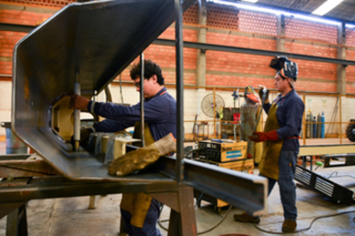

Programa para emprendedores y pymes de todo el país - 22 de Abril 2022
El programa Naves Federal 2022, tiene el objetivo de potenciar emprendimientos de todas las provincias del país a través de mentorías, acompañamiento y acceso a una red de contactos.
Por octavo año consecutivo, Banco Macro lanzó el programa Naves Federal junto al IAE Business School, que tendrá una duración de 6 meses y se llevará a cabo de forma online. Tiene como objetivo potenciar emprendimientos de todas las provincias del país a través de mentorías, acompañamiento y acceso a una red de contactos. Este programa brindará herramientas a los emprendedores y PYME para que lancen al mercado sus ideas de negocios, sus nuevos productos, sus nuevos servicios, con las mayores chances posibles de éxito. Emprender no es fácil, pero si tienen herramientas, capacitación y networking, realmente tienen muchas más chances de que les vaya bien”.
La primera etapa ofrecerá cinco seminarios obligatorios y tres opcionales a cargo de profesionales de la escuela de negocios de la Universidad Austral, donde los emprendedores revisarán temas como modelos de negocio, propuestas de valor, proyecciones económico-financieras, marketing y gestión comercial.
Además, el programa se desarrollará en las mismas nueve sedes que el año pasado: Provincia de Buenos Aires, Córdoba, Santa Fe y Misiones, que comenzarán el 17 de mayo, y Mendoza, Neuquén, Tucumán, Salta y Jujuy, que lo harán el 16.
Los 60 proyectos ganadores de la competencia federal tendrán como premio completar su formación en el Naves Nacional. Allí, recibirán cuatro seminarios más, acceso a un mentor del Banco Macro y de la escuela de negocios, y la ayuda de la red de apoyo IAE conformada por inversores, académicos, empresarios y medios de comunicación.
Además, los dos primeros puestos de cada categoría recibirán una beca para un programa focalizado del IAE Business School, horas de asesoría legal y consultoría gratuitas, mientras que los primeros lugares recibirán 3 millones de pesos (a repartir por el comité organizador) para iniciar o mejorar su proyecto.